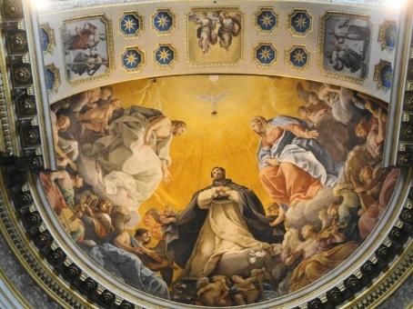
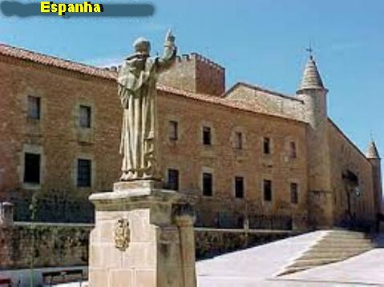

RETORNO A CASA DO PAI ETERNO
FINAL DA MISSÃO TERRESTRE
No Mês de Julho de 1221, Frei
Domingos empreendeu uma viagem a Veneza, para conversar com o seu amigo Cardeal
Hugolino, a respeito de fortalecer e 
De regresso, ao chegar ao Convento de Bolonha, sentiu-se fraco e com febre. Todas as suas viagens eram feitas a pé, ele não utilizava nenhum tipo de transporte. Por essa razão o seu corpo cansado, começou apresentar as reações de uma enfermidade. E pouco a pouco, à medida que se sucediam os dias, aquele estado foi piorando e consumindo as suas forças. O grande missionário de DEUS, depois de ter realizado inúmeras e quilométricas caminhadas por toda Europa, pregando a Palavra de DEUS, agora estava sentindo uma profunda fraqueza e tão grande, que sentiu estar próxima a sua partida para a vida eterna. Mandou chamar todos os Noviços. Reunidos ao redor dele, os jovens ouviram emocionados os prudentes e sábios conselhos do Pai Espiritual, que também lhes falou de DEUS e da VIRGEM MARIA, sobretudo, ressaltando com ênfase a grandeza do Amor e da Misericórdia Divina, suplicando-lhes que cultivassem a fé com decisão e perseverança, porque ela era o verdadeiro caminho para a eternidade.
Vendo que o estado físico dele se agravava, os Frades resolveram levá-lo para o Convento de Santa Maria do Monte, Convento que pertencia aos Monges Beneditinos.
Mas a enfermidade debilitava rapidamente o corpo do homem de DEUS.
Ao clarear o dia 6 de Agosto, Frei Domingos mandou chamar Frei Ventura e mais vinte Frades. Aconselhou-os, e lhes falou da perseverança no ideal religioso, da responsabilidade pessoal de cada um e do carinho com que deviam tratar e amar a Ordem Religiosa. Sobretudo, acrescentou: “tenham caridade, perseverem na humildade e abracem a pobreza voluntária”.
O Monge Guardião dos Beneditinos estava admirado com tudo o que presenciava, e vendo o prestígio e a santidade de Frei Domingos, declarou que se ele viesse a falecer, não deixaria que levassem o seu corpo, ele seria enterrado ali mesmo. O Dominicano Frei Ventura ao ouvir a palavra do Guardião dos Beneditinos levou o fato a Frei Domingos, que muito preocupado, disse:
- “Que DEUS não permita isso, pois quero ser sepultado debaixo dos pés de meus Frades. Levem-me daqui agora, mesmo que eu morra no caminho. Pois quero que vocês me sepultem em nossa Igreja”.
E cuidadosamente o levaram para o Convento de São Nicolau em Bolonha.
Deitado numa cama agonizava os últimos momentos da sua vida. Seus filhos, os Frades Pregadores, estão desolados e muitos choram. Frei Domingos os consola, dizendo:
- “Não chorem, porque depois da morte eu lhes serei mais útil. Lá do Céu eu ajudarei vocês com minhas preces”.
Então, os Frades quiseram começar a encomendação, mas Frei Domingos disse: “ainda não é a minha hora” , e assim, tudo voltou ao silêncio.
Mas o silêncio foi quebrado pelo pranto de Frei Ventura, que disse:
- “Pai, tu nos deixas desamparados e muito tristes. Quando estiveres diante do SENHOR, lembra de nós e pede por nós”.
Tendo ouvido estas palavras, Domingos levantou as mãos ao Céu e rezou:
- “PAI SANTO, sabeis que de todo o coração eu perseverei na VOSSA Santíssima Vontade, e que guardei aqueles que me destes. Eu os encomendo a VÓS. Preservai-os e protegei-os”.
Frei Rodolfo de joelhos, delicadamente com um lenço, limpou o suor do rosto dele.
Domingos olhou para os seus Frades e disse:
- “Comecem agora a encomendação”.
A vida dele estava chegando ao final.
A Comunidade começou a rezar e, quando pronunciaram as palavras: “Vinde Santos de DEUS; correi Anjos do SENHOR; recebei a sua alma e a apresentai diante da Face do ALTÍSSIMO”, Domingos faleceu suavemente no SENHOR. Eram exatamente dezoito horas do dia 6 de Agosto de 1221.
DEPOIS DA MORTE

Doze anos após o sepultamento, os Frades quiseram lhe preparar um sepulcro mais digno e com este objetivo foram pedir autorização ao Papa, para transladarem os seus restos mortais.
O Papa não só autorizou como também os repreendeu severamente, por não ter tomado esta providência há anos passados. E o Santo Padre ainda acrescentou:
- “Nele encontrei um homem que realizava perfeitamente a regra de vida dos Apóstolos; não duvido que no Céu, este fato, esteja associado à sua glória”.
Em 24 de Maio de 1233, o túmulo foi aberto e imediatamente começou a exalar um perfume maravilhoso que envolveu todas as pessoas presentes. Ao abrir o ataúde, o perfume se tornou ainda mais forte e agradável. Todos se emocionaram, choraram e se prostraram por terra louvando e bendizendo a DEUS. E agora também, como já vinha acontecendo desde o sepultamento, muitos milagres aconteceram pela intercessão de Frei Domingos. A misericórdia infinita do SENHOR, sempre atendia a sua intercessão carinhosa, derramando uma infinidade de graças e beneficiando a todos os devotos que cultivavam honestamente a fé.
Logo em seguida, começou o Processo de Canonização, e assim, o Cardeal Hugolino, o seu amigo sincero de todos os tempos, teve a grande alegria de, em Julho de 1234, já eleito Papa, com o nome de Papa Gregório IX, CANONIZAR Frei Domingos e inscrevê-lo no Catálogo dos Santos com o nome de SÃO DOMINGOS DE GUSMÃO, cuja festa é celebrada anualmente no dia 8 de Agosto.